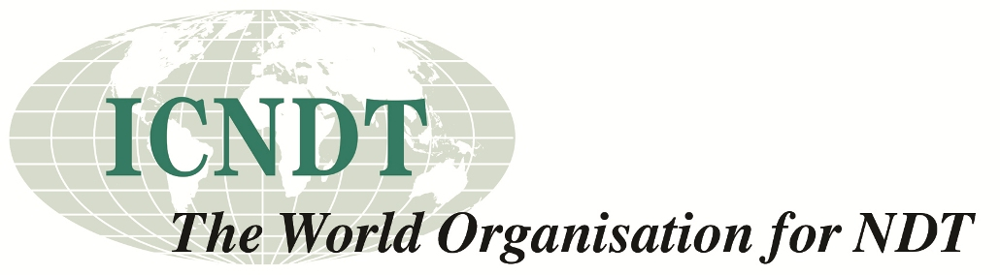

Time until conference
Since 1992, the Quantitative InfraRed Thermography conferences have convened specialists from industry and academia to present the field's most significant developments.
Established in 2015, the QIRT‑Asia series brings that tradition to the region's fast‑growing thermography community. Over four days at Marina Bay Sands — co‑located with the SINCE 2027 conference and exhibition — QIRT Asia 2027 gathers researchers, engineers and industry practitioners to exchange the latest advances in thermal imaging science, from quantitative methods, signal processing and AI to applications across aerospace, nuclear, biomedical and industrial inspection. Accepted papers are published in the QIRT Open Archives, indexed by Google Scholar, with selected contributions invited to the QIRT Journal. The conference is organised by the Nondestructive Testing Society of Singapore (NDTSS) and supported by A*STAR's Institute of Materials Research and Engineering (IMRE).
Mark your calendar for submission, registration and programme milestones.
Nine tracks spanning the breadth of quantitative infrared thermography — foundational, applied and emerging.
Machine learning, deep learning and data‑driven methods for thermal image analysis and interpretation.
Advanced processing, reconstruction and inversion methods for infrared signals and imagery.
Traceable calibration, measurement uncertainty and standards for quantitative thermography.
Photothermal radiometry, laser‑based excitation and thermophysical property characterisation.
Convective, conductive and radiative heat transfer diagnostics and flow visualisation.
Active and passive thermographic NDT for defect detection and material characterisation.
Clinical thermography, early disease detection and physiological thermal imaging.
Process monitoring, manufacturing quality control and Industry 4.0 integration.
Reactor and power infrastructure inspection, renewable energy diagnostics and grid monitoring.
A distinguished programme led by world-renowned figures in infrared thermography research. Click a speaker for their full biography.
View the full speaker programme → · additional invited speakers to be announced in late 2026.
Organised by Singapore's national NDT society, supported by A*STAR's materials research institute, and co‑located with the SINCE 2027 conference and exhibition.
The Nondestructive Testing Society of Singapore (NDTSS) advances NDT technology, certification and knowledge across Singapore and the Southeast Asian region.
Visit site ↗The Institute of Materials Research and Engineering at A*STAR — Singapore's premier research institute for materials science, nanotechnology and advanced characterisation.
Visit site ↗


The programme committee welcomes contributions on all aspects of quantitative infrared thermography.